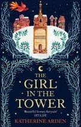
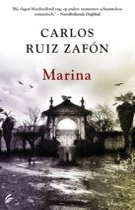

Laatste aanwinsten:

Burn Bright
Auteur: Patricia Briggs
With their Alpha out of the country, Charles and Anna are on call when an SOS comes in from the fae mate of
one such wildling. Heading into the mountainous wilderness, they interrupt the abduction of the wolf−−but
can't stop blood from being shed. Now Charles and Anna must use their skills−−his as enforcer, hers as
peacemaker−−to track down the attackers.

Draconis Memoria 2 − Het Legioen van Vlammen
Auteur: Anthony Ryan
De legendarische Witte Draak – niet meer dan een mythe volgens sommigen – is ontwaakt uit een diepe slaap met
een dorst om de wereld van de mens eens en voor altijd in de as te leggen.
Er is al een stad gevallen onder de ontzagwekkende legioenen van de draak, en meer zullen snel volgen,
tenzij Clee een geheim kan blootleggen dat diep onder het zuidelijke ijs ligt begraven.

The Girl in the Tower
Auteur: Katherine Arden
For a young woman in medieval Russia, the choices are stark: marriage or a life in a convent. Vasya will
choose a third way: magic... The court of the Grand Prince of Moscow is plagued by power struggles and rumours of unrest. Meanwhile
bandits roam the countryside. Setting out to defeat the
raiders, the Prince and his trusted companion come across a young man riding a magnificent horse.

De Herderskroon
Auteur: Terry Pratchett
Het is een tijd van einden en beginnen, van oude vrienden en nieuwe, van grenzen die aan het vervagen zijn,
en van het verschuiven van macht. Ditmaal is het Tiffany die tussen het licht en het donker, het goede en
het kwade staat. Als een leger elfen klaarstaat voor een invasie moet Tiffany de heksen zien te verenigen.
Om het land te beschermen. Haar land. Er moet werk van gemaakt worden. Koste wat kost.

De Kunst van het Verdwijnen
Auteur: Sarah Domogala
Als Sarah dertien is gaan haar ouders plotseling scheiden, en voor het eerst voelt ze paniek. Ze probeert
haar groeiende angsten te bezweren door naar Amsterdam te verhuizen en de beste regisseur te worden die er
bestaat. Op haar zesentwintigste stort ze volledig in:
burn−out. In de stilte die volgt gaat ze terug naar haar wortels: maar hoe vind je jezelf weer als je zo ver
van huis bent geraakt?

Marina
Auteur: Carlos Ruiz Zafon
Barcelona, 1979−1980. Oscar Drai blikt terug op een dramatisch keerpunt in zijn leven toen hij 15 jaar was:
de confrontatie met sinistere dreiging, maar zeker ook met het licht van de liefde. Dwalend door de
vervallen villawijk rond zijn internaat belandt hij bij een oude kunstschilder en diens schone dochter
Marina. Een stroeve kennismaking die omslaat in warme vriendschap.

Mythos
Auteur: Stephen Fry
Losbandigheid, lust en liefde, moord en doodslag, triomfen en tragedies; de Griekse mythen en sagen zijn
wilder en woester dan het leven zelf. Deze verhalen bieden alles wat een lezer zich kan wensen. De oude
Grieken inspireerden onder anderen Shakespeare, Michelangelo, James Joyce en Walt Disney. In de handen van
Stephen Fry komen de verhalen opnieuw tot leven.

De Naam van de Wind
Auteur: Patrick Rothfuss
'Mijn naam is Kvothe. Ik heb prinsessen teruggestolen van slapende grafkoningen. Ik heb het stadje Trebon
platgebrand. Ik heb de nacht doorgebracht met Felurian en ben met zowel mijn geest als mijn leven intact
weer vertrokken. Ik werd van de universiteit gestuurd op jongere leeftijd dan de meeste mensen er worden
toegelaten. Ik betreed paden in het maanlicht die anderen overdag niet eens durven te benoemen.

Ready Player One
Auteur: Ernest Cline
We schrijven 2044. Sinds de Grote Recessie leeft een aanzienlijk deel van de wereldbevolking in schrijnende
armoede. Als James Halliday kinderloos sterft, laat hij de hongerende mensheid een fantastisch spel na:
OASIS, een onlinegame die door miljarden spelers tegelijk gespeeld kan worden. Kort na zijn dood blijkt dat
hij drie sleutels in het spel verstopt heeft, die leiden naar een kluis waarin de rest van zijn erfenis ligt
opgeborgen.